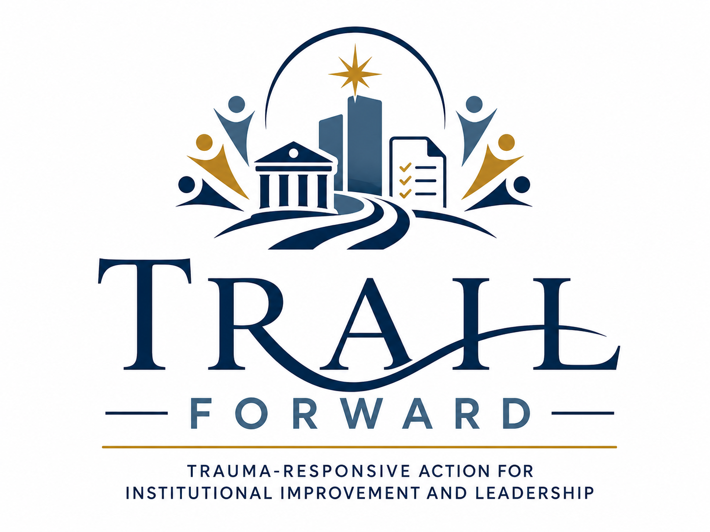

Policy and Procedure Review
Reviewing policies, procedures, protocols, and practices through a trauma-responsive lens.
Policy & Systems Change
Trauma-Responsive Action for Institutional Improvement and Leadership

Policy and Systems-Change Branch
TRAIL Forward advances trauma-responsive institutional change by helping organizations and systems assess, revise, and strengthen policies, procedures, programs, protocols, and organizational practices.
Reviewing policies, procedures, protocols, and practices through a trauma-responsive lens.
Supporting programs, agencies, and organizations in strengthening trauma-responsive design, delivery, and accountability.
Developing model protocols, implementation tools, organizational recommendations, and research-to-practice resources.
Research to Action
TRAIL Forward connects research, practice knowledge, and lived experience to practical systems-change work. The goal is not only to understand trauma, but to change the organizational conditions that shape how people are treated.
Contributors may support policy review, program evaluation, systems-change tools, model protocols, and organizational recommendations.
TRAIL Forward Opportunities